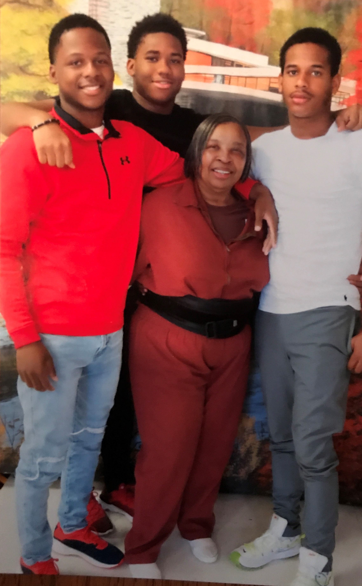
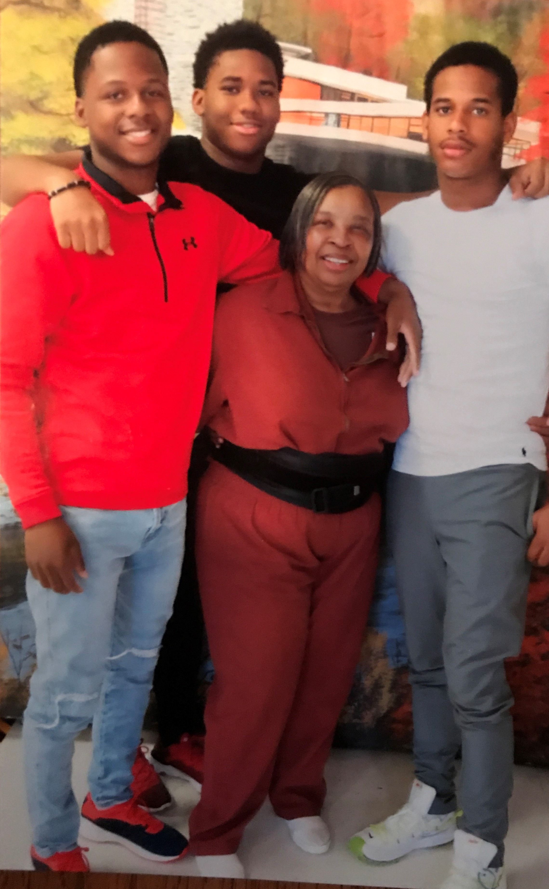
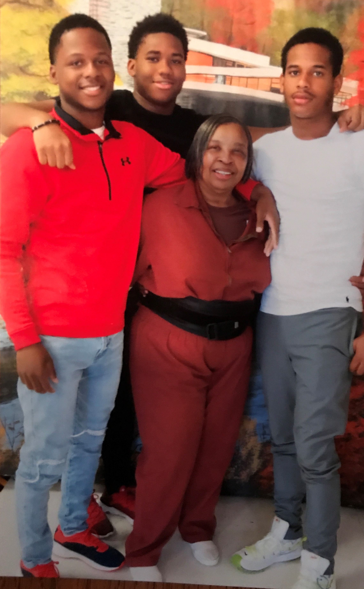
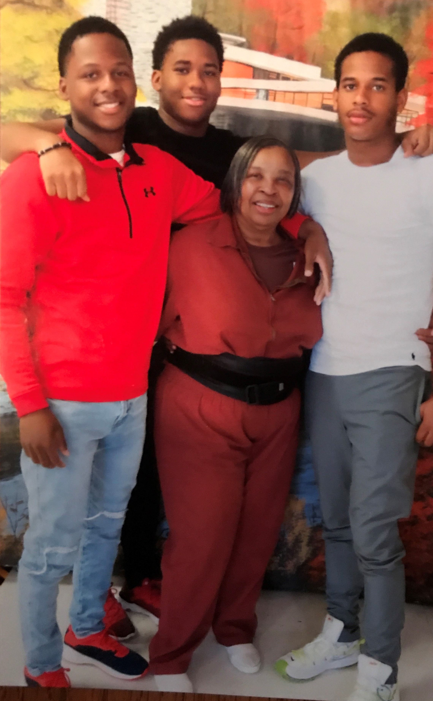

Throughout her incarceration, Sylvia has actively pursued opportunities for rehabilitation, education, vocational training, and spiritual development. As a survivor of childhood abuse and violence, she recognizes the need for ongoing mental health treatment and continues to participate in treatment programming for victims of sexual assault and trauma.
Sylvia has profound remorse for the harm her actions caused to the victim, the victim’s family, and her own family. She constantly thinks about the pain she caused her family and wants nothing more than to be able to see them and take care of them once again.
Sylvia’s rehabilitative work has prepared her for reentry into society. She hopes to continue her work as a Certified Mental Health Peer Specialist, particularly “with young people to make sure they don’t make the same bad choices I’ve made.” She wants to spend time with her three daughters and seven grandchildren, as well as with her church community. She has maintained a strong relationship with her family and her community while incarcerated, which will only smooth her transition back into society. Her daughters, god-brother, and sister, as well as many friends, members of her church community, and student advocates have expressed their commitment to helping Sylvia throughout the reentry process. A family friend who is a university professor promised Sylvia a place to stay, financial support, and a job upon her release and reentry.